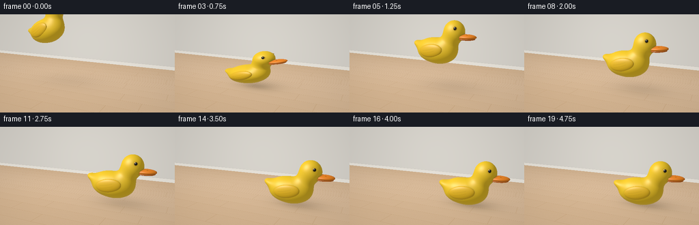
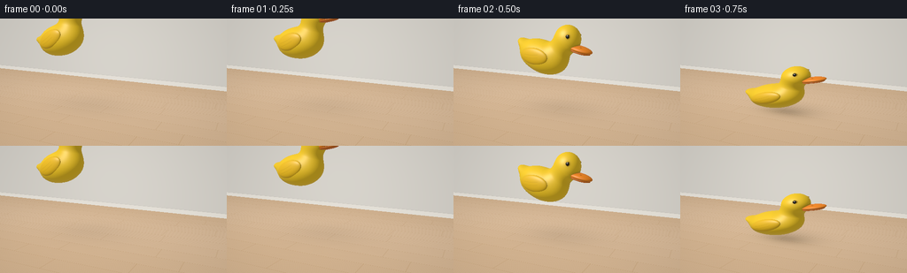
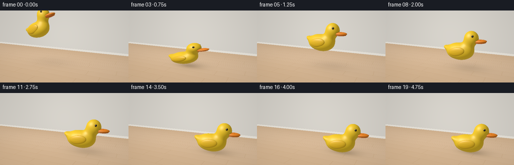
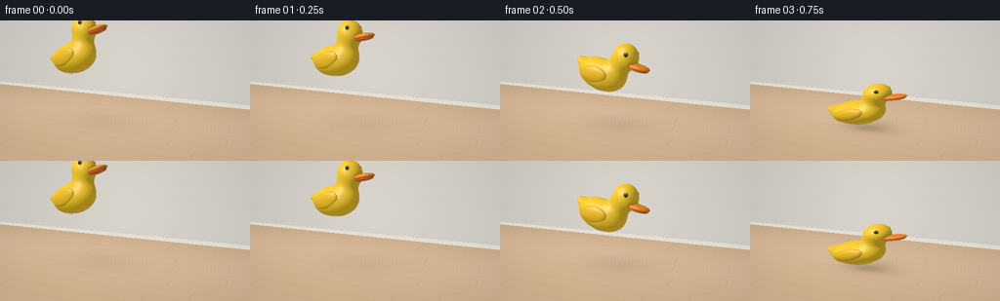
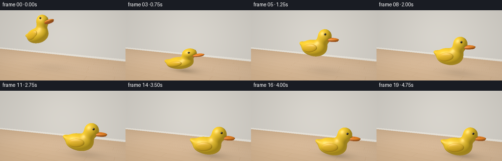
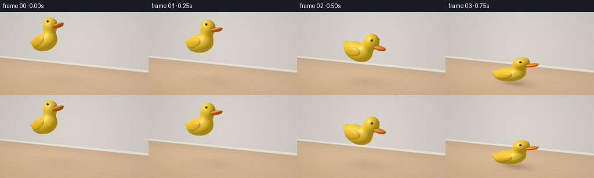

CODING AGENTS AS PIXEL WORLD MODELS
traex/GPT-6.1-Sol · mechanics_0037
点击播放 · 原生 RGB 像素
逐轮保存的候选
回放视频、检查图与代码变化。
每份候选均可单独播放。实际图片检查记录在下方工具轨迹中。
候选 01播放与检查图
点击播放 · 原生 RGB 像素


展开代码变化
--- 上一保存版本
+++ 本次保存版本
@@ -0,0 +1,256 @@
+"""Procedurally render a soft rubber duck tossed onto an oak floor.
+Only analytic geometry, numpy shading, and PIL supersampling are used.
+"""
+from pathlib import Path
+import json, math
+import numpy as np
+from PIL import Image
+import artifact_io
+
+ROOT = Path(__file__).resolve().parent
+SPEC = json.loads((ROOT/'task_spec.json').read_text())
+W,H = SPEC['width'], SPEC['height']
+SS = 2
+RW,RH = W*SS,H*SS
+
+# Perspective camera and a large, soft studio window light.
+EYE = np.array([3.6,3.0,7.7], np.float32)
+TARGET = np.array([0.,1.00,0.], np.float32)
+FWD = TARGET-EYE; FWD /= np.linalg.norm(FWD)
+RIGHT = np.cross(FWD, np.array([0,1,0])); RIGHT /= np.linalg.norm(RIGHT)
+UP = np.cross(RIGHT,FWD)
+ys,xs = np.mgrid[0:RH,0:RW]
+focal = RW/(2*np.tan(np.deg2rad(44)/2))
+RAYS = (FWD[None,None,:]+((xs+.5-RW/2)/focal)[...,None]*RIGHT+((RH/2-ys-.5)/focal)[...,None]*UP).astype(np.float32)
+RAYS /= np.linalg.norm(RAYS,axis=2)[...,None]
+LIGHT = np.array([-3.0,7.0,5.0],np.float32)
+
+def ellipsoid(p,center,r):
+ q=p-np.asarray(center,np.float32)
+ r=np.asarray(r,np.float32)
+ k0=np.sqrt(np.sum((q/r)**2,axis=-1)+1e-12)
+ k1=np.sqrt(np.sum((q/(r*r))**2,axis=-1)+1e-12)
+ return k0*(k0-1)/k1
+
+def smin(a,b,k):
+ h=np.clip(.5+.5*(b-a)/k,0,1)
+ return b*(1-h)+a*h-k*h*(1-h)
+
+def rotated(p,center,ang):
+ q=p-np.asarray(center,np.float32)
+ c,s=math.cos(ang),math.sin(ang)
+ return np.stack([c*q[...,0]+s*q[...,1],-s*q[...,0]+c*q[...,1],q[...,2]],axis=-1)
+
+def geometry(p, material=False):
+ d=ellipsoid(p,(-.15,.53,0),(.79,.52,.54))
+ d=smin(d,ellipsoid(p,(-.57,.58,0),(.47,.38,.43)),.22)
+ # Upturned tail, with a soft taper into the rounded rump.
+ q=rotated(p,(-.88,.70,0),-.34)
+ d=smin(d,ellipsoid(q,(0,0,0),(.39,.16,.29)),.15)
+ d=smin(d,ellipsoid(p,(.32,.88,0),(.34,.43,.33)),.20)
+ d=smin(d,ellipsoid(p,(.52,1.29,0),(.415,.433,.376)),.16)
+ if material: mid=np.zeros(d.shape,np.int16)
+ # Raised, molded side wings.
+ for sign in [1,-1]:
+ q=rotated(p,(-.24,.59,sign*.477),.14)
+ b=ellipsoid(q,(0,0,0),(.48,.255,.111))
+ if material: mid=np.where(b<d,1,mid)
+ d=np.minimum(d,b)
+ # A broad orange bill, not a conical bird beak.
+ b=ellipsoid(p,(1.00,1.122,0),(.387,.104,.255))
+ if material: mid=np.where(b<d,2,mid)
+ d=np.minimum(d,b)
+ b=ellipsoid(p,(.995,1.054,0),(.345,.057,.235))
+ if material: mid=np.where(b<d,3,mid)
+ d=np.minimum(d,b)
+ for sign in [1,-1]:
+ ec=(.692,1.445,sign*.330)
+ b=ellipsoid(p,ec,(.071,.073,.048))
+ if material: mid=np.where(b<d,4,mid)
+ d=np.minimum(d,b)
+ ec=(.700,1.448,sign*.356)
+ b=ellipsoid(p,ec,(.054,.056,.037))
+ if material: mid=np.where(b<d,5,mid)
+ d=np.minimum(d,b)
+ return (d,mid) if material else d
+
+def state(t):
+ # Successive decreasing ballistic rebounds; every large impact is sampled.
+ contacts=[.75,1.75,2.50,3.0,3.375,3.60]
+ if t<.75:
+ height=1.6+.8666666667*t-4*t*t
+ px=-1.55+1.63*t
+ tilt=np.interp(t,[0,.25,.5,.75],[.31,.17,-.23,-.04])
+ flight=True
+ else:
+ height=0.; flight=False
+ for a,b in zip(contacts[:-1],contacts[1:]):
+ if a<=t<b:
+ u=t-a; height=4*u*(b-a-u); flight=True
+ break
+ if t<1.75: px=-.3275+1.09*(t-.75)
+ elif t<2.5: px=.7625+.62*(t-1.75)
+ elif t<3: px=1.2275+.26*(t-2.5)
+ else: px=1.3575+.065*(1-np.exp(-(t-3)*3))
+ tilt=0
+ if flight:
+ dur=b-a; f=(t-a)/dur
+ tilt=.17*(dur)*np.cos(np.pi*f)
+ if t>=3.6: tilt=.048*np.exp(-3.0*(t-3.6))*np.sin(15*(t-3.6))
+ squeeze=0
+ for k,c in enumerate(contacts):
+ squeeze=max(squeeze,(.255*(.70**k))*np.exp(-((t-c)/.055)**2))
+ # Compression conserves toy volume; rebound returns it to the molded form.
+ scale=np.array([1+.58*squeeze,1-squeeze,1+.52*squeeze],np.float32)
+ yaw=-.13+.055*t
+ cz,sz=np.cos(tilt),np.sin(tilt)
+ cy,sy=np.cos(yaw),np.sin(yaw)
+ rz=np.array([[cz,-sz,0],[sz,cz,0],[0,0,1]],np.float32)
+ ry=np.array([[cy,0,sy],[0,1,0],[-sy,0,cy]],np.float32)
+ rot=ry@rz
+ # Keep the soft belly tangent to the floor, including small rocking angles.
+ floor_offset=.52*scale[1]*abs(cz)+.79*scale[0]*abs(sz)-.53*scale[1]
+ origin=np.array([px,height+max(0,floor_offset),0.0],np.float32)
+ return height,origin,rot,scale
+
+def background(height,origin):
+ dy=RAYS[:,:,1]
+ tf=np.where(dy<-.001,-EYE[1]/dy,1e5)
+ tw=(-4.3-EYE[2])/RAYS[:,:,2]
+ floor=tf<tw
+ points=EYE+RAYS*tf[...,None]
+ xx,zz=points[:,:,0],points[:,:,2]
+ plank=np.floor((zz+20)/.63).astype(np.int32)
+ frac=(zz+20)/.63-plank
+ # Long oak strips and staggered end joins, all in floor-space.
+ seams=np.exp(-(np.minimum(frac,1-frac)/.008)**2)
+ offset=np.sin(plank*7.19)*2.4
+ joint=(xx+offset)/3.5
+ jfrac=joint-np.floor(joint)
+ end=np.exp(-(np.minimum(jfrac,1-jfrac)/.0028)**2)
+ grain=(np.sin(zz*120+np.sin(xx*.65+plank)*3)+.4*np.sin(zz*285+np.sin(xx*1.3)*2))
+ fleck=np.sin(xx*70+zz*244)*np.sin(xx*13-zz*84)
+ wood=np.array([.62,.439,.278])[None,None,:]+(0.009*grain+.003*fleck+.023*np.sin(plank*6.77))[...,None]
+ wood-=(.085*seams+.061*end)[...,None]
+ # Low-frequency pale window illumination on a satin-finished floor.
+ illumination=.99+.11*np.exp(-((xx+2.2)**2+(zz-1)**2)/24)
+ wood*=illumination[...,None]
+ # A height-dependent soft cast shadow, offset away from the window.
+ sx=origin[0]+.16+.19*height
+ sz=-.18-.15*height
+ spread=.49+.18*height
+ g=np.exp(-.5*((xx-sx)/(spread*1.38))**2-.5*((zz-sz)/spread)**2)
+ shadow=(.23*np.exp(-height*.47))*g
+ contact=np.exp(-((xx-origin[0])/.70)**2-((zz-.03)/.34)**2)*.20*np.exp(-height*7)
+ wood*=np.clip(1-shadow-contact,.50,1)[...,None]
+ # Very faint broad yellow bounce-light beneath the toy.
+ bounced=np.exp(-((xx-origin[0])/.95)**2-((zz-.16)/.56)**2)*.016*np.exp(-height*2)
+ wood+=bounced[...,None]*np.array([1,.63,-.2])
+ wp=EYE+RAYS*tw[...,None]
+ wall=np.ones((RH,RW,3),np.float32)*np.array([.68,.655,.604])
+ wall*= (.94+.075*np.exp(-((wp[:,:,0]+2)**2+(wp[:,:,1]-2)**2)/14))[...,None]
+ # Simple painted baseboard grounds the room without distracting props.
+ base=(wp[:,:,1]<.19)&(wp[:,:,1]>0)
+ wall=np.where(base[...,None],np.array([.78,.748,.684])[None,None,:],wall)
+ line=np.exp(-((wp[:,:,1]-.195)/.009)**2)*.075
+ wall-=line[...,None]
+ img=np.where(floor[...,None],wood,wall)
+ return img
+
+def render(t):
+ height,origin,rot,scale=state(t)
+ img=background(height,origin)
+ # Transform camera rays to the deforming duck's local coordinates.
+ ro=((EYE-origin)@rot)/scale
+ rd=(RAYS@rot)/scale
+ # Bounding-sphere clipping limits expensive SDF work to toy pixels.
+ bc=np.array([.1,.85,0],np.float32)
+ rel=ro-bc
+ aa=np.sum(rd*rd,axis=2); bb=np.sum(rd*rel,axis=2)
+ cc=np.sum(rel*rel)-1.68**2
+ disc=bb*bb-aa*cc
+ valid=disc>0
+ ids=np.flatnonzero(valid.ravel())
+ dirs=rd.reshape(-1,3)[ids]
+ dirs_world=RAYS.reshape(-1,3)[ids]
+ tnear=(-bb.ravel()[ids]-np.sqrt(disc.ravel()[ids]))/aa.ravel()[ids]
+ tfar=(-bb.ravel()[ids]+np.sqrt(disc.ravel()[ids]))/aa.ravel()[ids]
+ travel=np.maximum(tnear,0)
+ live=np.ones(len(ids),bool)
+ hit=np.zeros(len(ids),bool)
+ speed=np.linalg.norm(dirs,axis=1)
+ for step in range(105):
+ ii=np.flatnonzero(live)
+ if not len(ii): break
+ p=ro+dirs[ii]*travel[ii,None]
+ d=geometry(p)
+ done=d<.00065
+ hit[ii[done]]=True
+ live[ii[done]]=False
+ moving=ii[~done]
+ travel[moving]+=np.maximum(d[~done]*.79,.00025)/speed[moving]
+ live[travel>tfar]=False
+ selected=np.flatnonzero(hit)
+ if len(selected):
+ q=ro+dirs[selected]*travel[selected,None]
+ _,mat=geometry(q,True)
+ eps=.0013
+ normal=np.stack([geometry(q+np.eye(3,dtype=np.float32)[i]*eps)-geometry(q-np.eye(3,dtype=np.float32)[i]*eps) for i in range(3)],axis=-1)
+ normal=(normal/scale)@rot.T
+ normal/=np.linalg.norm(normal,axis=1)[:,None]
+ pos=(q*scale)@rot.T+origin
+ light=LIGHT-pos; light/=np.linalg.norm(light,axis=1)[:,None]
+ view=-dirs_world[selected]
+ lambert=np.maximum(np.sum(normal*light,axis=1),0)
+ # Ambient occlusion near the neck and where molded wings meet the body.
+ nl=(normal@rot)/scale; nl/=np.linalg.norm(nl,axis=1)[:,None]
+ ao=np.ones(len(q),np.float32)
+ for radius,weight in [(0.035,.18),(.09,.13),(.20,.10)]:
+ free=geometry(q+nl*radius)
+ ao-=weight*np.clip(1-free/radius,0,1)
+ bases=np.array([[1.0,.66,.018],[.96,.584,.013],[1.,.285,.012],[.80,.19,.007],[.81,.48,.009],[.009,.008,.006]],np.float32)
+ albedo=bases[mat].copy()
+ # Two delicate curved feather impressions on the raised wing.
+ wing=mat==1
+ qwing=rotated(q,(-.24,.59,.477),.14)
+ for shift in [-.064,.035]:
+ curve=shift+.13*((qwing[:,0]+.24)/.7)**2
+ line=np.exp(-((qwing[:,1]-curve)/.007)**2)
+ visible=wing&(qwing[:,0]>-.31)&(qwing[:,0]<.20)
+ albedo[visible]*=(1-.14*line[visible,None])
+ bill=(mat==2)|(mat==3)
+ mouth=np.exp(-((q[:,1]-1.073)/.007)**2)*np.clip((q[:,0]-.84)*10,0,1)
+ albedo[bill]*=(1-.45*mouth[bill,None])
+ # Nostrils printed/molded on the top of the orange bill.
+ for sign in [-1,1]:
+ nostril=np.exp(-((q[:,0]-1.073)/.029)**2-((q[:,2]-sign*.134)/.018)**2)
+ albedo[bill]*=(1-.65*nostril[bill,None])
+ diffuse=.35+.66*lambert
+ # Hemisphere lighting warms the underside with reflected oak light.
+ hemi=np.clip(normal[:,1]*.5+.5,0,1)
+ color=albedo*diffuse[:,None]*ao[:,None]
+ color+=albedo*(1-hemi)[:,None]*np.array([.025,.013,.003])
+ half=light+view; half/=np.linalg.norm(half,axis=1)[:,None]
+ nh=np.maximum(np.sum(normal*half,axis=1),0)
+ specular=.22*nh**37+.045*nh**7
+ specular=np.where(mat==5,.82*nh**92+.17*nh**12,specular)
+ color+=specular[:,None]*np.array([1.0,.93,.78])
+ # Soft white reflection of the rectangular window, particularly on eyes.
+ fres=(1-np.maximum(np.sum(normal*view,axis=1),0))**4
+ color+=.045*fres[:,None]*np.array([.84,.90,1.0])
+ img.reshape(-1,3)[ids[selected]]=color
+ # Linear-light rendering to RGB, with a subtle photographic vignette.
+ vignette=1-.075*((xs-RW/2)/(RW/2))**2-.035*((ys-RH/2)/(RH/2))**2
+ img*=vignette[...,None]
+ rgb=np.uint8(np.clip(np.power(np.clip(img,0,1),1/2.2)*255+.5,0,255))
+ return np.asarray(Image.fromarray(rgb).resize((W,H),Image.Resampling.LANCZOS))
+
+def main():
+ frames=[]
+ for i in range(SPEC['frames']):
+ print(f'Rendering {i+1}/{SPEC["frames"]}',flush=True)
+ frames.append(render(i/SPEC['fps']))
+ artifact_io.save(np.stack(frames).astype(np.uint8),ROOT)
+ print('Saved RGB video and playback artifacts.',flush=True)
+
+if __name__=='__main__': main()
候选 02播放与检查图
点击播放 · 原生 RGB 像素


展开代码变化
--- 上一保存版本 +++ 本次保存版本 @@ -15,12 +15,12 @@ # Perspective camera and a large, soft studio window light. EYE = np.array([3.6,3.0,7.7], np.float32) -TARGET = np.array([0.,1.00,0.], np.float32) +TARGET = np.array([0.,1.28,0.], np.float32) FWD = TARGET-EYE; FWD /= np.linalg.norm(FWD) RIGHT = np.cross(FWD, np.array([0,1,0])); RIGHT /= np.linalg.norm(RIGHT) UP = np.cross(RIGHT,FWD) ys,xs = np.mgrid[0:RH,0:RW] -focal = RW/(2*np.tan(np.deg2rad(44)/2)) +focal = RW/(2*np.tan(np.deg2rad(49)/2)) RAYS = (FWD[None,None,:]+((xs+.5-RW/2)/focal)[...,None]*RIGHT+((RH/2-ys-.5)/focal)[...,None]*UP).astype(np.float32) RAYS /= np.linalg.norm(RAYS,axis=2)[...,None] LIGHT = np.array([-3.0,7.0,5.0],np.float32)
候选 03播放与检查图
点击播放 · 原生 RGB 像素


展开代码变化
--- 上一保存版本 +++ 本次保存版本 @@ -15,7 +15,7 @@ # Perspective camera and a large, soft studio window light. EYE = np.array([3.6,3.0,7.7], np.float32) -TARGET = np.array([0.,1.28,0.], np.float32) +TARGET = np.array([0.,1.70,0.], np.float32) FWD = TARGET-EYE; FWD /= np.linalg.norm(FWD) RIGHT = np.cross(FWD, np.array([0,1,0])); RIGHT /= np.linalg.norm(RIGHT) UP = np.cross(RIGHT,FWD)
可观测工具轨迹
实际执行的命令与返回图片。
命令 1exit 0
/bin/bash -lc 'ls -la && cat prompt.txt && cat GENERATION_RULES.md && cat task_spec.json'
命令 2exit 0
/bin/bash -lc "cat artifact_io.py && python - <<'PY' import importlib.util for x in ['numpy','PIL','scipy','skimage']: print(x, bool(importlib.util.find_spec(x))) PY"
命令 3exit 0
/bin/bash -lc "cat > generate.py <<'PY'
\"\"\"Procedurally render a soft rubber duck tossed onto an oak floor.
Only analytic geometry, numpy shading, and PIL supersampling are used.
\"\"\"
from pathlib import Path
import json, math
import numpy as np
from PIL import Image
import artifact_io
ROOT = Path(__file__).resolve().parent
SPEC = json.loads((ROOT/'task_spec.json').read_text())
W,H = SPEC['width'], SPEC['height']
SS = 2
RW,RH = W*SS,H*SS
# Perspective camera and a large, soft studio window light.
EYE = np.array([3.6,3.0,7.7], np.float32)
TARGET = np.array([0.,1.00,0.], np.float32)
FWD = TARGET-EYE; FWD /= np.linalg.norm(FWD)
RIGHT = np.cross(FWD, np.array([0,1,0])); RIGHT /= np.linalg.norm(RIGHT)
UP = np.cross(RIGHT,FWD)
ys,xs = np.mgrid[0:RH,0:RW]
focal = RW/(2*np.tan(np.deg2rad(44)/2))
RAYS = (FWD[None,None,:]+((xs+.5-RW/2)/focal)[...,None]*RIGHT+((RH/2-ys-.5)/focal)[...,None]*UP).astype(np.float32)
RAYS /= np.linalg.norm(RAYS,axis=2)[...,None]
LIGHT = np.array([-3.0,7.0,5.0],np.float32)
def ellipsoid(p,center,r):
q=p-np.asarray(center,np.float32)
r=np.asarray(r,np.float32)
k0=np.sqrt(np.sum((q/r)**2,axis=-1)+1e-12)
k1=np.sqrt(np.sum((q/(r*r))**2,axis=-1)+1e-12)
return k0*(k0-1)/k1
def smin(a,b,k):
h=np.clip(.5+.5*(b-a)/k,0,1)
return b*(1-h)+a*h-k*h*(1-h)
def rotated(p,center,ang):
q=p-np.asarray(center,np.float32)
c,s=math.cos(ang),math.sin(ang)
return np.stack([c*q[...,0]+s*q[...,1],-s*q[...,0]+c*q[...,1],q[...,2]],axis=-1)
def geometry(p, material=False):
d=ellipsoid(p,(-.15,.53,0),(.79,.52,.54))
d=smin(d,ellipsoid(p,(-.57,.58,0),(.47,.38,.43)),.22)
# Upturned tail, with a soft taper into the rounded rump.
q=rotated(p,(-.88,.70,0),-.34)
d=smin(d,ellipsoid(q,(0,0,0),(.39,.16,.29)),.15)
d=smin(d,ellipsoid(p,(.32,.88,0),(.34,.43,.33)),.20)
d=smin(d,ellipsoid(p,(.52,1.29,0),(.415,.433,.376)),.16)
if material: mid=np.zeros(d.shape,np.int16)
# Raised, molded side wings.
for sign in [1,-1]:
q=rotated(p,(-.24,.59,sign*.477),.14)
b=ellipsoid(q,(0,0,0),(.48,.255,.111))
if material: mid=np.where(b<d,1,mid)
d=np.minimum(d,b)
# A broad orange bill, not a conical bird beak.
b=ellipsoid(p,(1.00,1.122,0),(.387,.104,.255))
if material: mid=np.where(b<d,2,mid)
d=np.minimum(d,b)
b=ellipsoid(p,(.995,1.054,0),(.345,.057,.235))
if material: mid=np.where(b<d,3,mid)
d=np.minimum(d,b)
for sign in [1,-1]:
ec=(.692,1.445,sign*.330)
b=ellipsoid(p,ec,(.071,.073,.048))
if material: mid=np.where(b<d,4,mid)
d=np.minimum(d,b)
ec=(.700,1.448,sign*.356)
b=ellipsoid(p,ec,(.054,.056,.037))
if material: mid=np.where(b<d,5,mid)
d=np.minimum(d,b)
return (d,mid) if material else d
def state(t):
# Successive decreasing ballistic rebounds; every large impact is sampled.
contacts=[.75,1.75,2.50,3.0,3.375,3.60]
if t<.75:
height=1.6+.8666666667*t-4*t*t
px=-1.55+1.63*t
tilt=np.interp(t,[0,.25,.5,.75],[.31,.17,-.23,-.04])
flight=True
else:
height=0.; flight=False
for a,b in zip(contacts[:-1],contacts[1:]):
if a<=t<b:
u=t-a; height=4*u*(b-a-u); flight=True
break
if t<1.75: px=-.3275+1.09*(t-.75)
elif t<2.5: px=.7625+.62*(t-1.75)
elif t<3: px=1.2275+.26*(t-2.5)
else: px=1.3575+.065*(1-np.exp(-(t-3)*3))
tilt=0
if flight:
dur=b-a; f=(t-a)/dur
tilt=.17*(dur)*np.cos(np.pi*f)
if t>=3.6: tilt=.048*np.exp(-3.0*(t-3.6))*np.sin(15*(t-3.6))
squeeze=0
for k,c in enumerate(contacts):
squeeze=max(squeeze,(.255*(.70**k))*np.exp(-((t-c)/.055)**2))
# Compression conserves toy volume; rebound returns it to the molded form.
scale=np.array([1+.58*squeeze,1-squeeze,1+.52*squeeze],np.float32)
yaw=-.13+.055*t
cz,sz=np.cos(tilt),np.sin(tilt)
cy,sy=np.cos(yaw),np.sin(yaw)
rz=np.array([[cz,-sz,0],[sz,cz,0],[0,0,1]],np.float32)
ry=np.array([[cy,0,sy],[0,1,0],[-sy,0,cy]],np.float32)
rot=ry@rz
# Keep the soft belly tangent to the floor, including small rocking angles.
floor_offset=.52*scale[1]*abs(cz)+.79*scale[0]*abs(sz)-.53*scale[1]
origin=np.array([px,height+max(0,floor_offset),0.0],np.float32)
return height,origin,rot,scale
def background(height,origin):
dy=RAYS[:,:,1]
tf=np.where(dy<-.001,-EYE[1]/dy,1e5)
tw=(-4.3-EYE[2])/RAYS[:,:,2]
floor=tf<tw
points=EYE+RAYS*tf[...,None]
xx,zz=points[:,:,0],points[:,:,2]
plank=np.floor((zz+20)/.63).astype(np.int32)
frac=(zz+20)/.63-plank
# Long oak strips and staggered end joins, all in floor-space.
seams=np.exp(-(np.minimum(frac,1-frac)/.008)**2)
offset=np.sin(plank*7.19)*2.4
joint=(xx+offset)/3.5
jfrac=joint-np.floor(joint)
end=np.exp(-(np.minimum(jfrac,1-jfrac)/.0028)**2)
grain=(np.sin(zz*120+np.sin(xx*.65+plank)*3)+.4*np.sin(zz*285+np.sin(xx*1.3)*2))
fleck=np.sin(xx*70+zz*244)*np.sin(xx*13-zz*84)
wood=np.array([.62,.439,.278])[None,None,:]+(0.009*grain+.003*fleck+.023*np.sin(plank*6.77))[...,None]
wood-=(.085*seams+.061*end)[...,None]
# Low-frequency pale window illumination on a satin-finished floor.
illumination=.99+.11*np.exp(-((xx+2.2)**2+(zz-1)**2)/24)
wood*=illumination[...,None]
# A height-dependent soft cast shadow, offset away from the window.
sx=origin[0]+.16+.19*height
sz=-.18-.15*height
spread=.49+.18*height
g=np.exp(-.5*((xx-sx)/(spread*1.38))**2-.5*((zz-sz)/spread)**2)
shadow=(.23*np.exp(-height*.47))*g
contact=np.exp(-((xx-origin[0])/.70)**2-((zz-.03)/.34)**2)*.20*np.exp(-height*7)
wood*=np.clip(1-shadow-contact,.50,1)[...,None]
# Very faint broad yellow bounce-light beneath the toy.
bounced=np.exp(-((xx-origin[0])/.95)**2-((zz-.16)/.56)**2)*.016*np.exp(-height*2)
wood+=bounced[...,None]*np.array([1,.63,-.2])
wp=EYE+RAYS*tw[...,None]
wall=np.ones((RH,RW,3),np.float32)*np.array([.68,.655,.604])
wall*= (.94+.075*np.exp(-((wp[:,:,0]+2)**2+(wp[:,:,1]-2)**2)/14))[...,None]
# Simple painted baseboard grounds the room without distracting props.
base=(wp[:,:,1]<.19)&(wp[:,:,1]>0)
wall=np.where(base[...,None],np.array([.78,.748,.684])[None,None,:],wall)
line=np.exp(-((wp[:,:,1]-.195)/.009)**2)*.075
wall-=line[...,None]
img=np.where(floor[...,None],wood,wall)
return img
def render(t):
height,origin,rot,scale=state(t)
img=background(height,origin)
# Transform camera rays to the deforming duck's local coordinates.
ro=((EYE-origin)@rot)/scale
rd=(RAYS@rot)/scale
# Bounding-sphere clipping limits expensive SDF work to toy pixels.
bc=np.array([.1,.85,0],np.float32)
rel=ro-bc
aa=np.sum(rd*rd,axis=2); bb=np.sum(rd*rel,axis=2)
cc=np.sum(rel*rel)-1.68**2
disc=bb*bb-aa*cc
valid=disc>0
ids=np.flatnonzero(valid.ravel())
dirs=rd.reshape(-1,3)[ids]
dirs_world=RAYS.reshape(-1,3)[ids]
tnear=(-bb.ravel()[ids]-np.sqrt(disc.ravel()[ids]))/aa.ravel()[ids]
tfar=(-bb.ravel()[ids]+np.sqrt(disc.ravel()[ids]))/aa.ravel()[ids]
travel=np.maximum(tnear,0)
live=np.ones(len(ids),bool)
hit=np.zeros(len(ids),bool)
speed=np.linalg.norm(dirs,axis=1)
for step in range(105):
ii=np.flatnonzero(live)
if not len(ii): break
p=ro+dirs[ii]*travel[ii,None]
d=geometry(p)
done=d<.00065
hit[ii[done]]=True
live[ii[done]]=False
moving=ii[~done]
travel[moving]+=np.maximum(d[~done]*.79,.00025)/speed[moving]
live[travel>tfar]=False
selected=np.flatnonzero(hit)
if len(selected):
q=ro+dirs[selected]*travel[selected,None]
_,mat=geometry(q,True)
eps=.0013
normal=np.stack([geometry(q+np.eye(3,dtype=np.float32)[i]*eps)-geometry(q-np.eye(3,dtype=np.float32)[i]*eps) for i in range(3)],axis=-1)
normal=(normal/scale)@rot.T
normal/=np.linalg.norm(normal,axis=1)[:,None]
pos=(q*scale)@rot.T+origin
light=LIGHT-pos; light/=np.linalg.norm(light,axis=1)[:,None]
view=-dirs_world[selected]
lambert=np.maximum(np.sum(normal*light,axis=1),0)
# Ambient occlusion near the neck and where molded wings meet the body.
nl=(normal@rot)/scale; nl/=np.linalg.norm(nl,axis=1)[:,None]
ao=np.ones(len(q),np.float32)
for radius,weight in [(0.035,.18),(.09,.13),(.20,.10)]:
free=geometry(q+nl*radius)
ao-=weight*np.clip(1-free/radius,0,1)
bases=np.array([[1.0,.66,.018],[.96,.584,.013],[1.,.285,.012],[.80,.19,.007],[.81,.48,.009],[.009,.008,.006]],np.float32)
albedo=bases[mat].copy()
# Two delicate curved feather impressions on the raised wing.
wing=mat==1
qwing=rotated(q,(-.24,.59,.477),.14)
for shift in [-.064,.035]:
curve=shift+.13*((qwing[:,0]+.24)/.7)**2
line=np.exp(-((qwing[:,1]-curve)/.007)**2)
visible=wing&(qwing[:,0]>-.31)&(qwing[:,0]<.20)
albedo[visible]*=(1-.14*line[visible,None])
bill=(mat==2)|(mat==3)
mouth=np.exp(-((q[:,1]-1.073)/.007)**2)*np.clip((q[:,0]-.84)*10,0,1)
albedo[bill]*=(1-.45*mouth[bill,None])
# Nostrils printed/molded on the top of the orange bill.
for sign in [-1,1]:
nostril=np.exp(-((q[:,0]-1.073)/.029)**2-((q[:,2]-sign*.134)/.018)**2)
albedo[bill]*=(1-.65*nostril[bill,None])
diffuse=.35+.66*lambert
# Hemisphere lighting warms the underside with reflected oak light.
hemi=np.clip(normal[:,1]*.5+.5,0,1)
color=albedo*diffuse[:,None]*ao[:,None]
color+=albedo*(1-hemi)[:,None]*np.array([.025,.013,.003])
half=light+view; half/=np.linalg.norm(half,axis=1)[:,None]
nh=np.maximum(np.sum(normal*half,axis=1),0)
specular=.22*nh**37+.045*nh**7
specular=np.where(mat==5,.82*nh**92+.17*nh**12,specular)
color+=specular[:,None]*np.array([1.0,.93,.78])
# Soft white reflection of the rectangular window, particularly on eyes.
fres=(1-np.maximum(np.sum(normal*view,axis=1),0))**4
color+=.045*fres[:,None]*np.array([.84,.90,1.0])
img.reshape(-1,3)[ids[selected]]=color
# Linear-light rendering to RGB, with a subtle photographic vignette.
vignette=1-.075*((xs-RW/2)/(RW/2))**2-.035*((ys-RH/2)/(RH/2))**2
img*=vignette[...,None]
rgb=np.uint8(np.clip(np.power(np.clip(img,0,1),1/2.2)*255+.5,0,255))
return np.asarray(Image.fromarray(rgb).resize((W,H),Image.Resampling.LANCZOS))
def main():
frames=[]
for i in range(SPEC['frames']):
print(f'Rendering {i+1}/{SPEC[\"frames\"]}',flush=True)
frames.append(render(i/SPEC['fps']))
artifact_io.save(np.stack(frames).astype(np.uint8),ROOT)
print('Saved RGB video and playback artifacts.',flush=True)
if __name__=='__main__': main()
PY
python generate.py"命令 4exit 0
/bin/bash -lc "python - <<'PY' import generate as g import numpy as np h,o,r,s=g.state(0) for pt in [[.52,1.72,0],[-.15,.01,0],[.52,1.29,0]]: p=np.array(pt)*s@r.T+o-g.EYE print(72-np.dot(p,g.UP)/np.dot(p,g.FWD)*(g.focal/2)) PY"
命令 5exit 0
/bin/bash -lc "python - <<'PY'
p='generate.py'
s=open(p).read().replace('TARGET = np.array([0.,1.00,0.]','TARGET = np.array([0.,1.28,0.]').replace('np.deg2rad(44)','np.deg2rad(49)')
open(p,'w').write(s)
PY
python generate.py"命令 6exit 0
/bin/bash -lc "python - <<'PY' import numpy as np import generate as g for y in [1.6,1.65,1.7]: f=np.array([0.,y,0])-g.EYE;f/=np.linalg.norm(f) r=np.cross(f,[0,1,0]);r/=np.linalg.norm(r);u=np.cross(r,f) h,o,rot,s=g.state(0) p=np.array([.52,1.72,0])*s@rot.T+o-g.EYE print(y,72-np.dot(p,u)/np.dot(p,f)*(g.focal/2)) PY"
命令 7exit 0
/bin/bash -lc "python - <<'PY'
p='generate.py';s=open(p).read().replace('TARGET = np.array([0.,1.28,0.]','TARGET = np.array([0.,1.70,0.]');open(p,'w').write(s)
PY
python generate.py"命令 8exit 1
/bin/bash -lc "command -v ffmpeg && ffmpeg -hide_banner -loglevel error -y -framerate 4 -i frames/%02d.png -c:v libx264 -crf 18 -pix_fmt yuv420p -movflags +faststart duck_bounce.mp4 && python - <<'PY'
import numpy as np
from pathlib import Path
x=np.load('pixels.npz')['pixels']
assert x.shape==(144,256,20)
assert all((Path('frames')/f'{i:02d}.png').is_file() for i in range(20))
print('Validated: 20 RGB frames, 256Ã144, 4 fps, 5 seconds.')
PY"命令 9exit 0
/bin/bash -lc "python - <<'PY'
import numpy as np
from pathlib import Path
x=np.load('pixels.npz')['pixels']
assert x.shape==(144,256,20)
assert all((Path('frames')/f'{i:02d}.png').is_file() for i in range(20))
assert Path('index.html').is_file()
print('Validated all required output artifacts.')
PY"视觉工具实际返回图片 1

视觉工具实际返回图片 2

保存候选 3 份；完成命令 9 次；可验证图片返回 2 张。原始 API 响应与完整日志保留在本地。